三端（Web、iOS/Mac、Android）今天都用 Mermaid 自带的 neutral / dark 主题来画图，配上 Mermaid 12 默认的 neo 外观。结果是灰底方框，Chrome 和 Android 上还带阴影；暗色下节点发光；横排的图在手机上只露出前两格。建议：用 index.css 里的色值配一套主题，三端用同一份；再加一条规则：横排放不下就改成竖排。
下面每张图都是真的 Mermaid 12.2.0 画出来的（就是应用里打包的那一份构建），图框的 CSS 和色值都照 Web 文档页。样本是照写作规则（wiki-docs-writer.ts 的 Diagram 一节）造的中文图，并经过服务端的 parseDiagram 改写。
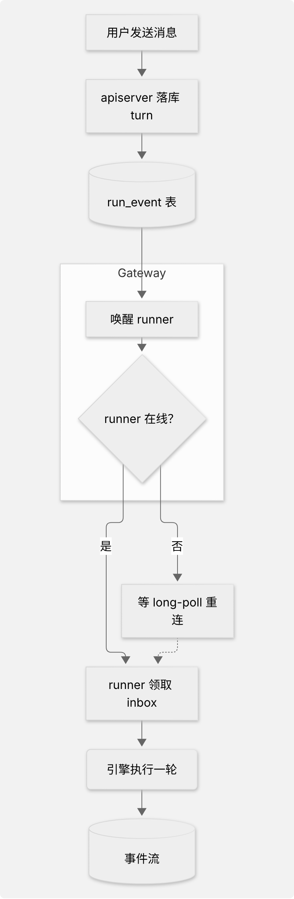
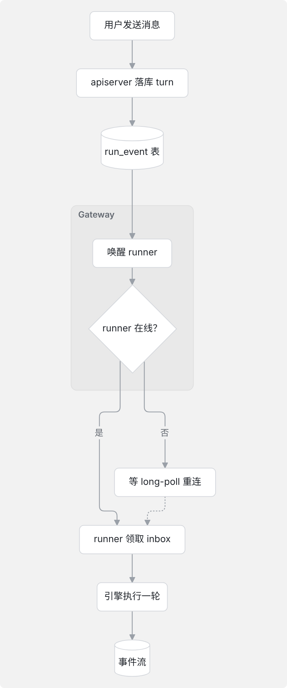
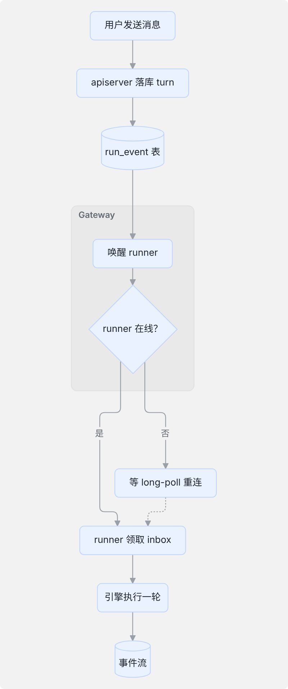
#eee 的直角框，深灰边。Chrome 和 Android 还给每个节点加一层灰色投影：这是 neo 外观的 drop-shadow。Safari 不画这层投影，所以 iOS 和 Mac 上看不到。classic 外观加 base 主题，色值取自 token）。#9aa0a8，箭头更小。标签不加底块，直接写在线上（底色就是图框的底色）。--brand-tint #eaf1ff，边是 --brand-border #bcd3ff），在灰页面上更跳一些。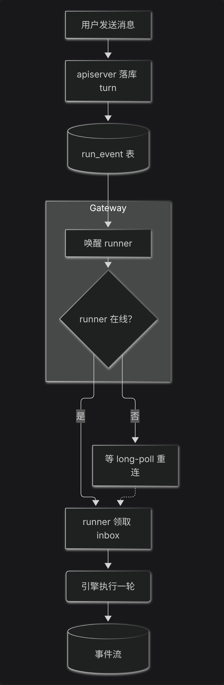
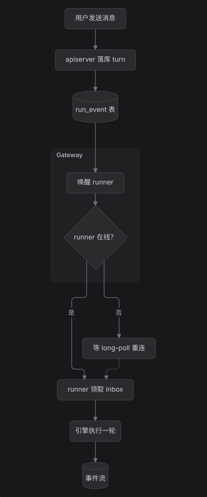
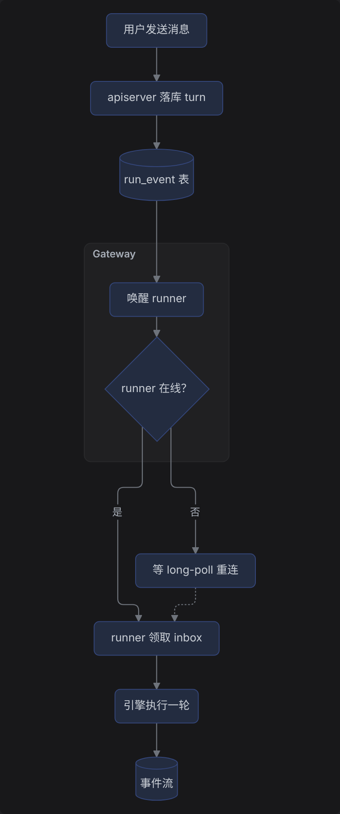
--bg-raised #2b2b2e，边 #45454a，字 --text-1。跟暗色页面上的卡片同一层级，图框还是今天那块 --fill-inset。--text-2。#232c40，边 #34467a。暗底上蓝色发闷，层次也不如 A 清楚。写作规则只允许 flowchart LR 和 flowchart TB，模型常写 LR。手机上图框的内宽大约 320px，而一条 7 个节点的横排流水线要 1000px 以上。今天只看得到前两格，剩下的要横着拖。规则：画完量一下宽度，横排（LR）比图框宽，就把同一张图按竖排（TB）再画一次。只改方向，节点和连线都不动。竖排的图不动。竖排也放不下（很少见）时，就用窄的那份，照旧横滑。下面都用方案 A。
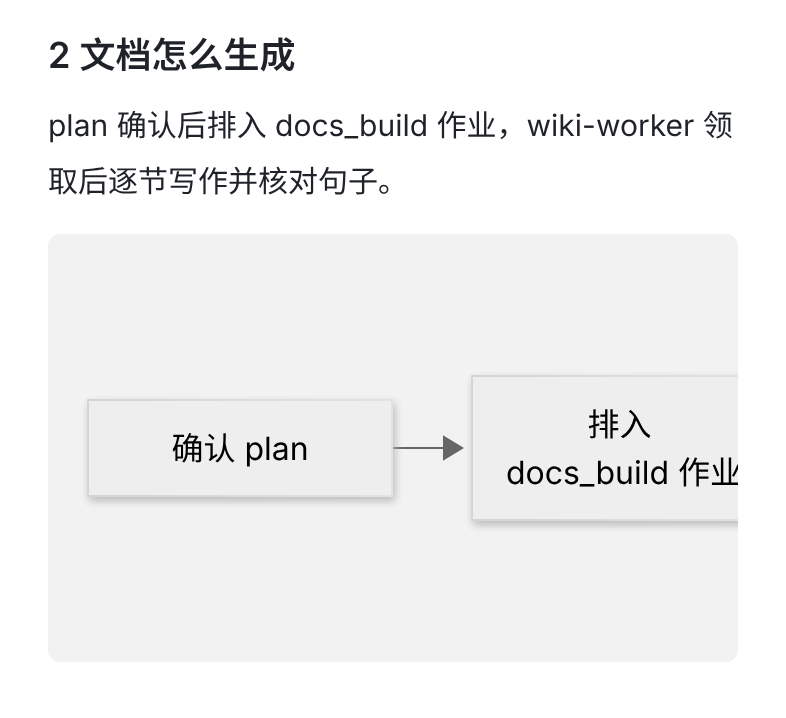
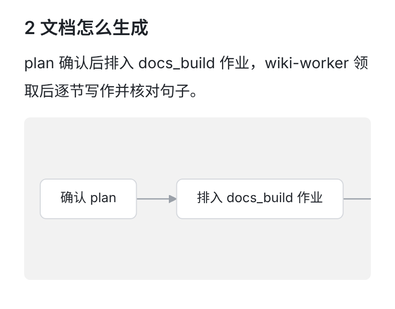
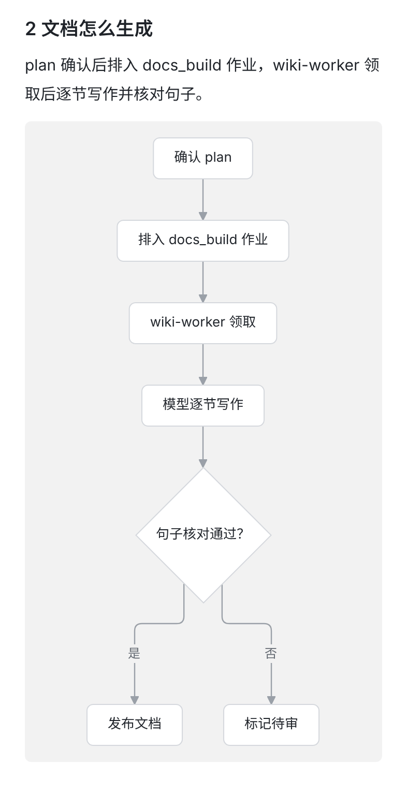
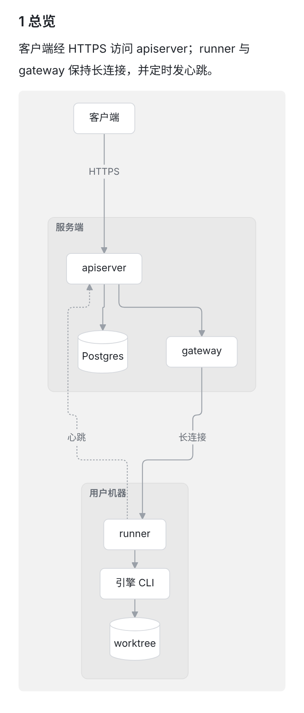
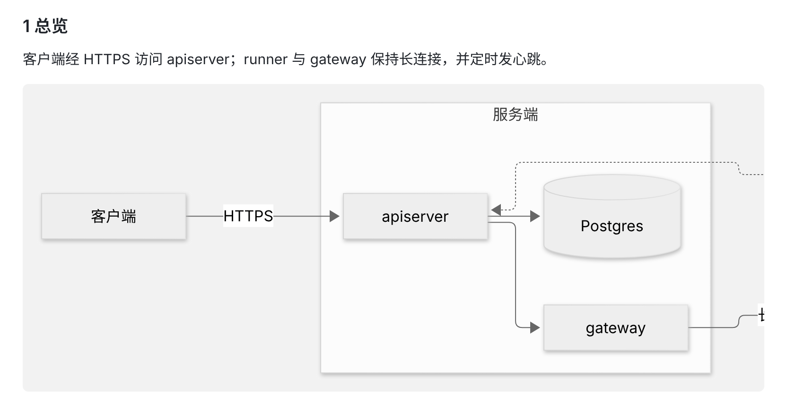
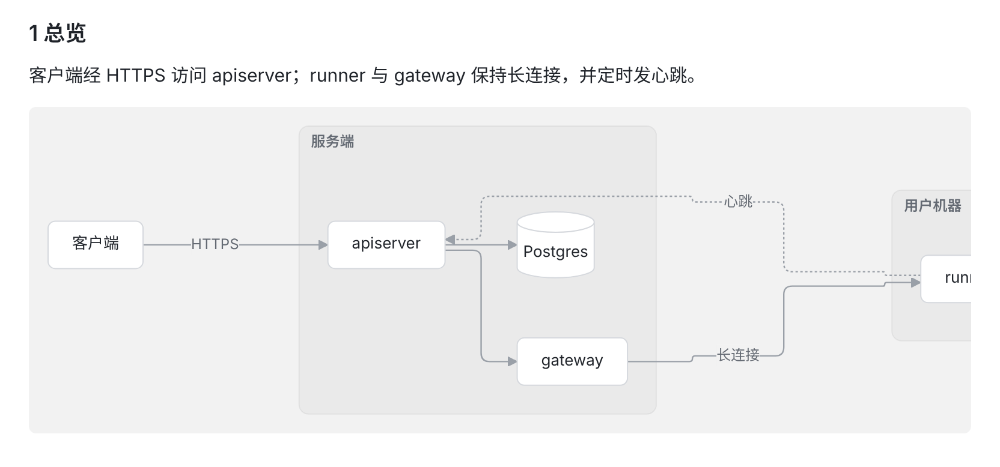
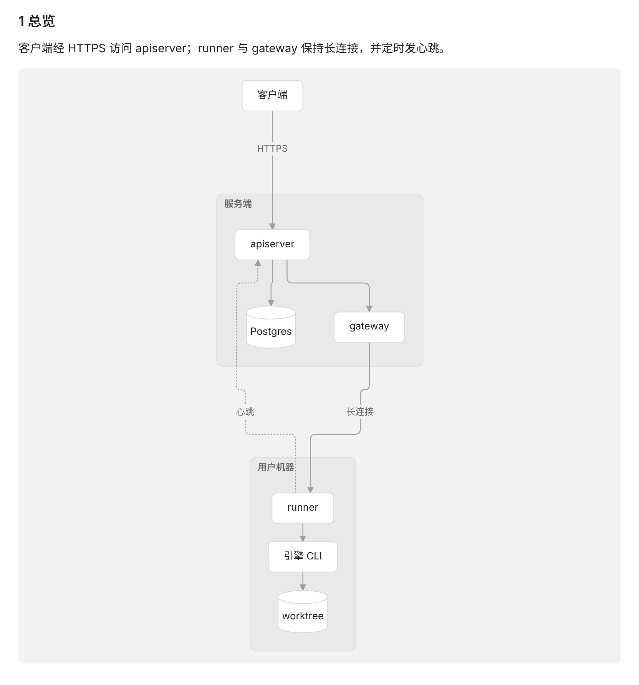
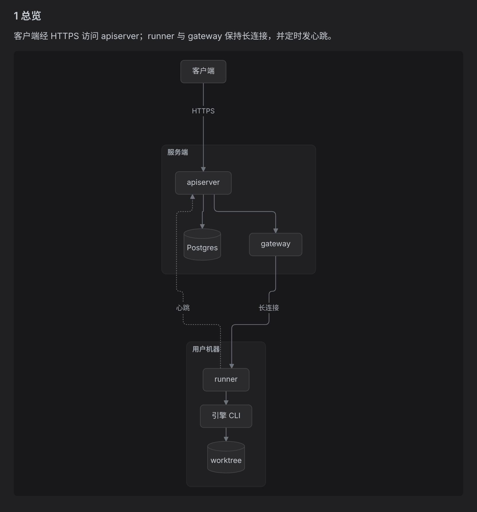
服务端会先把模型写的图规整一遍再存（parseDiagram），页面画的就是存下来的这份。它按节点第一次出现的位置决定节点属于哪个分组；Mermaid 自己的规则是第一个列出它的分组，分组外面提到它不算。模型很常先写连线、最后再写分组，这时规整出来的每个分组都是空的：节点全散在外面，分组只剩标题浮在左上角。下面两张都用方案 A 画，区别只在分组。
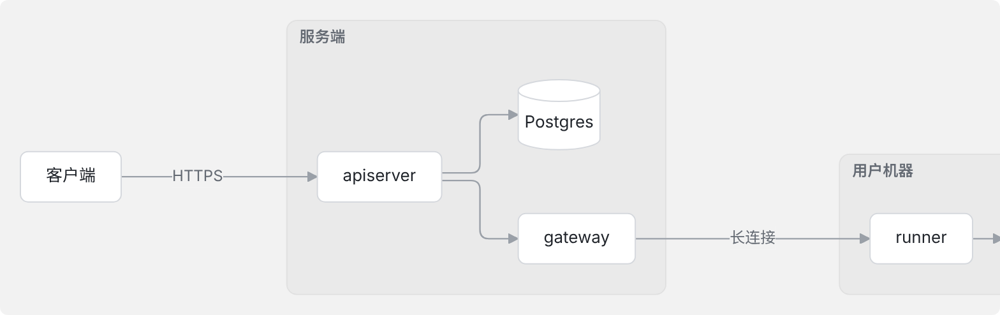
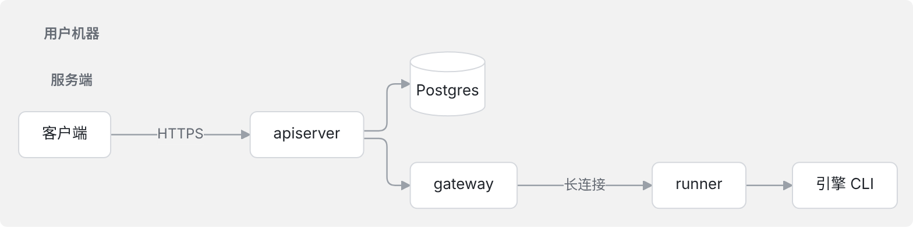
subgraph s1["服务端"] 下面直接就是 end），只改客户端补不回来。跟页面上的卡片、代码块用同一种语言，图读起来是插图，不像一排按钮。暗色下最稳。
偏素。节点多的时候略显单调。
更像一张图，在长文里更醒目。
蓝色在 Orbit 里表示「可点」或「选中」（链接、选中的行），可图里的节点点不了，容易被误读。暗色下蓝底发闷。
手机上一眼看全，Web 上也不用横拖。只改方向，内容一点不变。
方向跟模型写的不一样；竖排的图更长。
原样照画。
手机上基本只看得到前两格，后面的内容等于藏了起来。
现有文档里散掉的分组都会回来。前两次改 parseDiagram（1→2、2→3）都是这么做的。
overview、concepts、flow、data 这几类节全部重写，要花一轮 System model 的调用。
不花模型调用。
已经存下的图里分组信息已经没了，要等这些节因为来源变了被维护重写，才会恢复。
classic 外观、base 主题、浅色和暗色两套 themeVariables、themeCSS、flowchart 的间距与折行宽），再加「分组标题移到左上角」的那几行脚本。Web 的 WikiDiagram.tsx 直接用。WikiDiagram.swift 和 WikiDiagram.kt 各带一份，用现有的对照测试（WikiDocsCopyParityTests、WikiDiagramTest）钉住，保证跟 Web 一字不差。flowchart TB 再画一次。宽度用各端自己图框的内宽（Web 的 figure、iOS/Mac 的列宽、Android 的 WebView 宽）。parseDiagram 改用 Mermaid 的规则：一个节点归第一个列出它的分组，分组外面提到它不算。配上 spec（先写连线、后写分组的图要原样保留分组）。如果选了第 3 题的推荐，再把 WIKI_DOC_DIAGRAM_RULES.version 提到 4。securityLevel: 'strict' 照旧。themeCSS 只是几条样式，不加载任何外部资源，各端的 CSP 不用改。样式这部分不碰服务端。